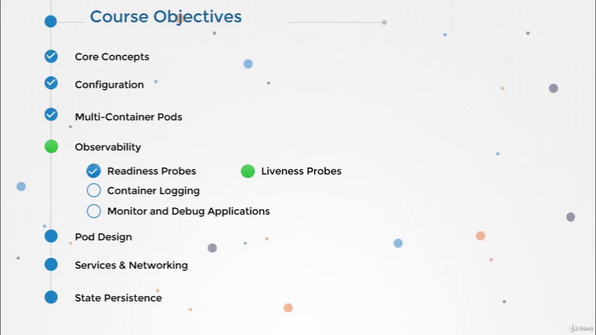
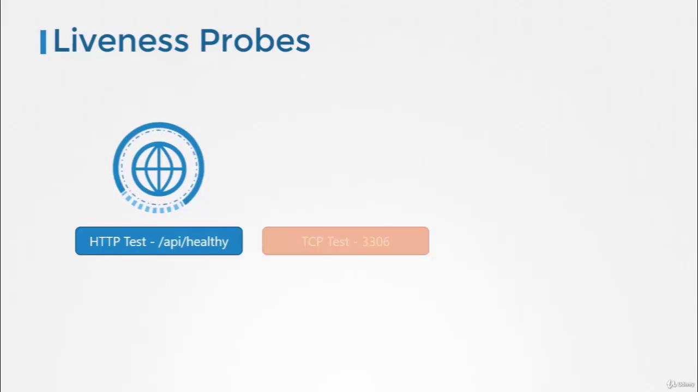

🛸 Liveness Probes
Documentation Index
Fetch the complete documentation index at: https://notes.kodekloud.com/llms.txt
Use this file to discover all available pages before exploring further.
Liveness Probes
This article explains liveness probes in Kubernetes, detailing their role in maintaining container health and providing configuration examples for developers.
Hello, and welcome to this comprehensive guide on liveness probes in Kubernetes. My name is Mumshad Mannambeth, and in this article, we will explore how liveness probes help maintain container health, ensuring that your applications remain resilient and available.

Understanding the Basics
When you run an Nginx container using Docker:
docker run nginx
the container starts serving users immediately. However, if the Nginx process crashes, the container will exit. You can inspect the container status with:
docker ps -a
which might produce output similar to:
CONTAINER ID IMAGE CREATED STATUS PORTS
45aacca36850 nginx 43 seconds ago Exited (1) 41 seconds ago
Since Docker is not designed for orchestration, the container remains stopped until you manually restart it.
In contrast, running the same web application in Kubernetes provides automated resilience. If the application crashes, Kubernetes will detect the issue and automatically restart the container. For example, you can start the container with:
kubectl run nginx --image=nginx
Check the pod status and observe the restart count by executing:
kubectl get pods
A sample output may look like this:
NAME READY STATUS RESTARTS AGE
nginx-pod 0/1 Completed 1 1d
If the application crashes repeatedly, the restart count increases:
kubectl get pods
Output:
NAME READY STATUS RESTARTS AGE
nginx-pod 0/1 Completed 2 1d
Even if a container appears "up", the application inside might not function correctly—for example, if it gets stuck in an infinite loop due to a bug. In such cases, Kubernetes would not automatically remedy the issue without further configuration.
The Role of Liveness Probes
This is where liveness probes become essential. A liveness probe periodically checks the health of your application running inside the container. If the probe’s test fails, Kubernetes considers the container unhealthy and recreates it to restore service. As a developer, you define what “healthy” means for your specific application. For a web service, it might mean that the API is responsive; for a database, ensuring the TCP socket is open could be the test; or you may choose to execute a custom command for more complex scenarios.

Liveness probes are defined within your pod's container specification in a manner similar to readiness probes but in a distinct configuration section. The available methods include:
- HTTP GET: Perform an HTTP request to check an API endpoint.
- TCP Socket: Validate that a specific TCP port is accepting connections.
- Exec Command: Run a command inside the container to verify application health.
Additionally, you can customize the behavior of the probe with parameters such as the initial delay, probe frequency, and failure thresholds.
Configuring a Liveness Probe
Below is an example of a complete pod definition that uses an HTTP GET liveness probe for a simple web application:
apiVersion: v1
kind: Pod
metadata:
name: simple-webapp
labels:
name: simple-webapp
spec:
containers:
- name: simple-webapp
image: simple-webapp
ports:
- containerPort: 8080
livenessProbe:
httpGet:
path: /api/healthy
port: 8080
initialDelaySeconds: 10
periodSeconds: 5
failureThreshold: 8
Below are additional configuration examples for liveness probes:
Using a TCP Socket
livenessProbe:
tcpSocket:
port: 3306
Using an Exec Command
livenessProbe:
exec:
command:
- cat
- /app/is_healthy
Ensure that your liveness probe configuration accurately reflects your application's health criteria. Misconfigured probes can lead to unnecessary restarts and disruptions.
Summary
This article has detailed the concept of liveness probes and demonstrated how to configure them to manage container health automatically in Kubernetes. Experiment with these configurations in your development setup to better understand how liveness probes can optimize application availability and reliability.
For more detailed Kubernetes guides and examples, continue exploring our resources and practical coding exercises.
See you in the next article!
Original Title: Liveness Probes
يمكنك استخدام الزر أدناه للعودة للقائمة.